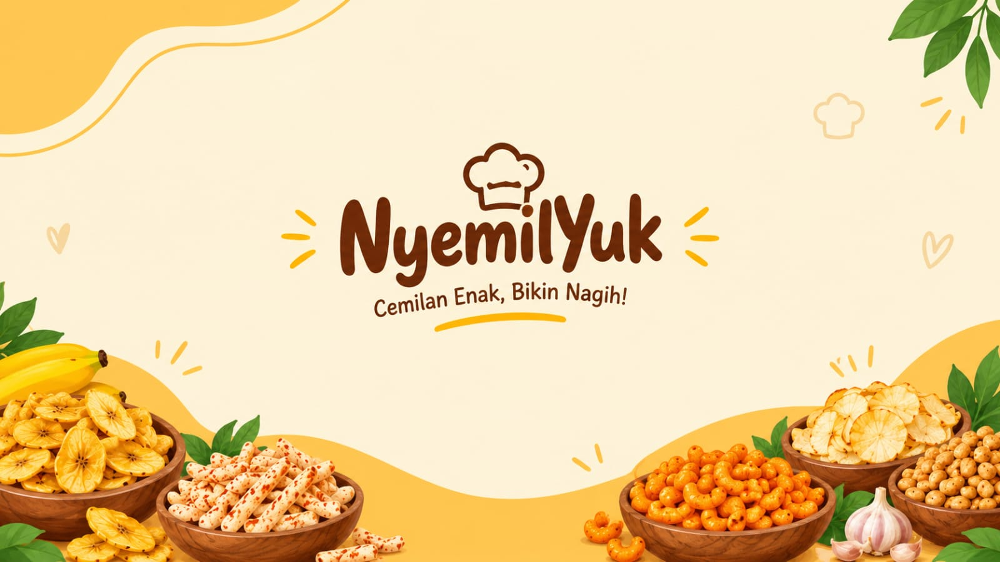

Praktis
Camilan mudah dinikmati saat beraktivitas.

Tentang usaha
NyemilYuk adalah contoh usaha mikro, kecil, dan menengah (UMKM) yang berfokus pada makanan ringan. Kami ingin menghadirkan camilan yang praktis, lezat, dan cocok dinikmati dalam berbagai suasana. Website ini dibuat sebagai media informasi agar pengunjung dapat mengenal produk, melihat galeri, dan membandingkan harga dengan mudah.
Menjadi usaha camilan lokal yang dikenal karena pilihan produk dan pelayanan yang baik.
Nilai kami
Camilan mudah dinikmati saat beraktivitas.
Ada rasa manis, gurih, dan pedas.
Daftar harga ditampilkan agar mudah dilihat.